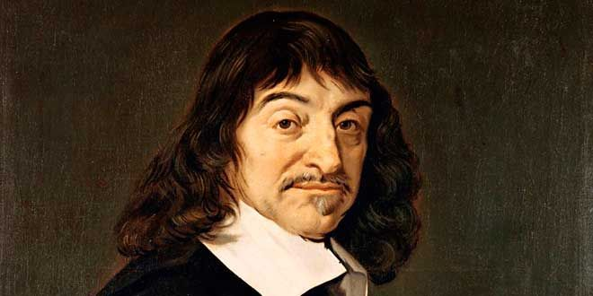

Homepage
René Déscartes

- René Descartes, the father of modern philosophy, laid down the idea of rationalism, later followed by Spinoza and Leibniz.
Descartes also contributed to the field of analytical geometry and led to the Cartesian coordinate system being named after him.
- He developed a method of doubt and a rational approach to knowledge, based on the famous principle "I think; therefore I am."
- He also proposed a dualism of mind and body, which raised the problem of how they interact and influence each other.
- Descartes frequently set his views apart from the philosophers who preceded him.
In the opening section of the Passions of the Soul, an early modern treatise on emotions,
Descartes goes so far as to assert that he will write on this topic "as if no one had written
on these matters before."
Go back the main homepage!